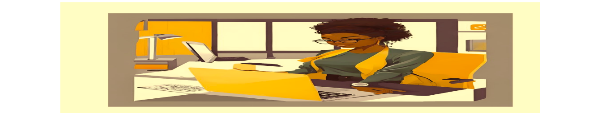

My profile introduced
Hello, my name is Netsanet, and I am excited to share a bit about myself. I was born in Addis Ababa and am the firstborn in my family, with younger siblings who inspire me every day. Throughout my academic journey, I have consistently strived for excellence, achieving the top scorer title in both elementary and high school. My dedication to learning was complemented by my active participation in various clubs, where I developed not only my leadership skills but also a passion for collaboration and community engagement.
Currently, I am a third-year software engineering student at Addis Ababa Institute of Technology (AAiT). This program has allowed me to deepen my understanding of technology and its applications in the real world. I am enthusiastic about the opportunities that lie ahead in the field of software engineering and am eager to leverage my skills to contribute positively to society. As I continue my studies, I remain committed to personal growth and academic excellence, ready to take on new challenges and make a meaningful impact in my community. Now I am more on web development and music parts.
